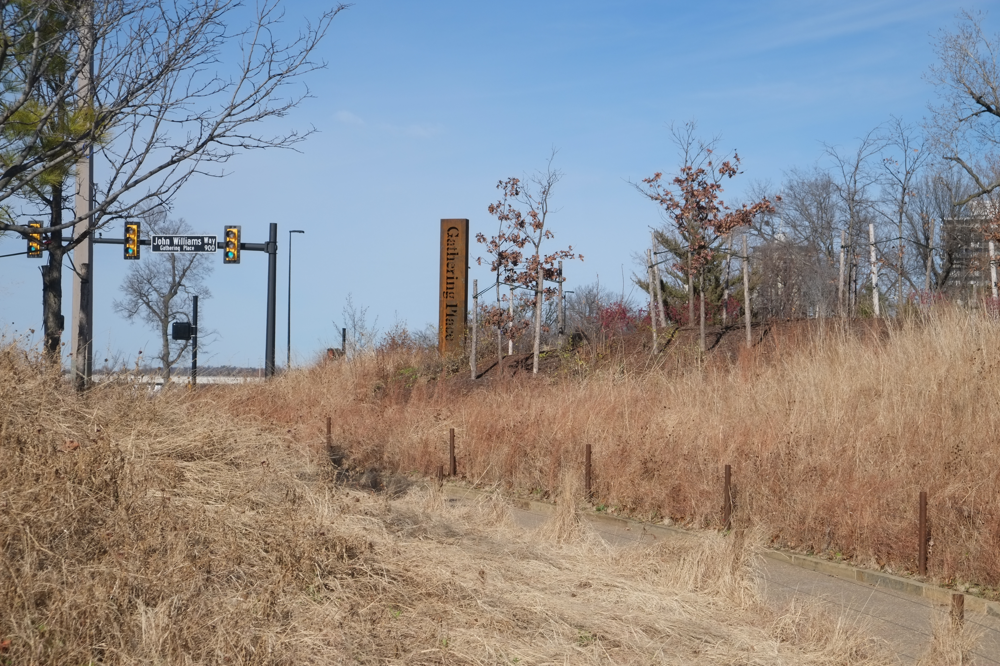

Here is a sentence that has ruined more than one out-of-towner's carefully planned June weekend: Tulsa Pride is not in June. I will give you a moment to recover. You booked the flights, you packed the mesh tank, you told your group chat you were spending Pride Month in Oklahoma of all places, and now I am telling you that the big festival, the parade, the entire glittering production, happens in October. Yes. October. Stay with me, because once you understand why, you are going to think it is genius.
This is exactly the kind of thing that does not make it into the chamber-of-commerce brochure, which is precisely why we exist. So let's lay out the whole Tulsa Pride situation in plain terms: when it actually happens, why the date moved, what to expect when you get there, and what to do with yourself in June if you came all this way for nothing. Spoiler, it is not nothing.
When Is Tulsa Pride 2026?
The main event, meaning the festival and the parade and the whole rainbow circus, lands in October. Since 2024, Tulsa Pride has been staged on the second weekend of October, and 2026 is expected to follow the pattern with festivities centered on Saturday, October 10. The organizers post the locked schedule each year, so before you book anything, go straight to the source at tulsapride.org and confirm. I am imperious, not psychic, and I refuse to let you miss it twice.
Tulsa Pride is run by Oklahomans for Equality, the state's largest LGBTQ+ organization, which has been doing this work out of the Dennis R. Neill Equality Center at 621 E 4th St since 1980. When OkEq says it is Pride weekend, the whole city leans in. Tens of thousands of people turn out. This is not a card table and a banner. This is the real thing.
Why Is Tulsa Pride in October Instead of June?
Three reasons, and every one of them is better than you are expecting. First, the heat. Oklahoma in late June is not a season, it is a medical event. We are talking triple digits, no shade, and asphalt that could fry an egg and your last good intention. Moving Pride to October means the elders, the kids, and the people in full drag in full sun are not at genuine risk of collapse. That alone is reason enough.
Second, the timing is poetry. October is LGBT History Month, and October 11 is National Coming Out Day, so a Tulsa Pride built around that weekend carries a weight that a June date never quite did. Third, and this is the practical one, October brings the college students back to town after summer break and gives OkEq a longer runway to fundraise after its spring Equality Gala. So the date that looks like an accident is actually the most thought-out decision in Oklahoma Pride. Honestly, more cities should be taking notes.

What Actually Happens at Tulsa Pride
The weekend is a full festival. Expect a parade through downtown that the city genuinely shows up for, a festival grounds packed with performance stages, community booths from every queer org in the metro, food trucks, vendors, and the kind of people-watching that justifies the whole trip. There is also the Rainbow Run, because apparently some of us want to be athletic about our liberation, and I respect it from a comfortable distance with a cold drink.
The booths are the part nobody tells you to prioritize, and they are where the real Tulsa lives. This is where you find the affirming churches, the trans support groups, the sports leagues, the political organizations like Freedom Oklahoma, and the small queer-owned businesses that make this city worth defending. Walk the whole row. Talk to people. You came for the parade, but you will remember the booths.
But It's June Right Now. Is There Nothing to Do?
Darling, please. This is still Pride Month, and Tulsa does not sit it out just because the parade moved. June in this city is stacked, starting with Tulsa Eagle Pride Fest, a two-day block party at the Eagle running June 20 and 21 at 300 S Quincy Ave. It is exactly the rowdy, leather-trimmed, beautifully unserious counterpoint to the big October production, and if you flew in expecting a party, this is your party.
Beyond that, the bars all run their own June programming. Club Majestic at 124 N Boston Ave throws the kind of drag nights that make a Pride Month feel like one, and Yellow Brick Road over on Cherry Street will hand you a microphone whether you asked for one or not. OkEq also runs community programming throughout June, from film screenings to discussions to health events. The point is this: there is no dead weekend in queer Tulsa, and the fastest way to find what is on is to check this week's events right here, because we update it every single Monday.
How to Do Tulsa Pride Right
If you are coming in October for the big one or rolling through for a June weekend, the playbook is the same. Base yourself downtown or in the Arts District so you can walk to most of it. Hit a drag show at Club Majestic at least once, arrive after 10pm, and tip your queens generously, because they are working and you know it. Build in a slow afternoon at Gathering Place on the river, which is free, better than it has any business being, and the unofficial living room of queer Tulsa on a nice day.
And spend your money where it matters. The whole reason a city like this has a Pride worth flying in for is that queer-owned businesses kept the lights on through some genuinely hostile years. Pull up our LGBTQ+ business directory and put your dollars there. That is not a guilt trip, it is a strategy. The community you are visiting was built on exactly that kind of patronage.
What to Bring (And What to Leave at Home)
For October, bring a light layer, because Oklahoma falls are gorgeous but the evenings turn fast, and you will be outside for hours. Bring cash for the booths and the tip jars, comfortable shoes that you do not mind retiring afterward, sunscreen even in October, and a water bottle, because hydration is not a personality flaw. If you are coming in June instead, halve the clothing and double the water, and respect the heat the way Oklahomans have learned to.
What to leave at home: the assumption that a red state cannot throw a Pride. Tulsa's queer community has been organizing since 1980, it has survived legislation designed to make it disappear, and it shows up louder every year for the trouble. Come with curiosity and an open tab, and this city will surprise you the way it surprises everyone who finally bothers to look.
Is Tulsa Pride Worth Traveling For?
Yes, and I am framing that as an answer out of courtesy when it is really an instruction. A Pride in a state that does not make it easy hits differently than a Pride in a city where it was always safe. There is a defiance in it, a there-are-more-of-us-than-you-think energy, that the coastal mega-festivals lost somewhere around their third corporate sponsor. Tulsa still means it. You can feel it on the parade route and you can feel it harder at the booths.
So mark October for the main event, use June for the warm-up, and either way let us do the scheduling for you. Follow @tulsagays on Instagram and check the calendar below, because the one thing worse than showing up in the wrong month is showing up in the right one and not knowing where the party is.
Know something we don't?
Got a Pride event, venue, or org we should be covering? Hit submit and we'll add it.
Submit an Event →